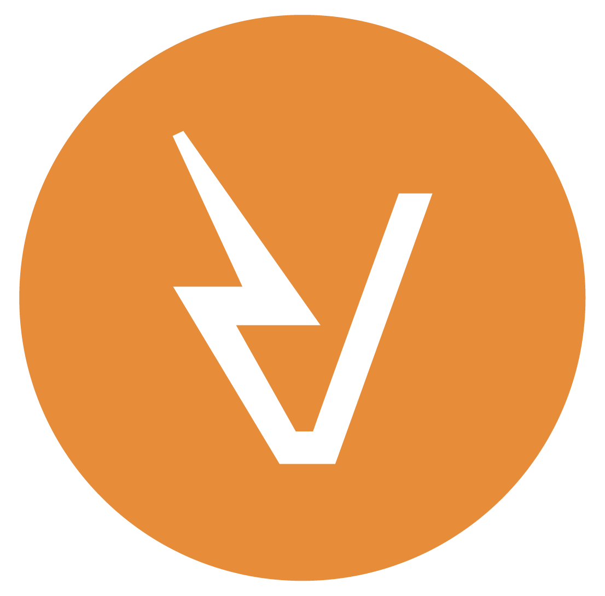

Over
Technisch sterk, praktisch in uitvoering.
VDW Projects & Solutions werd opgericht door Wouter Van De Wiele. De focus ligt op ondersteuning van complexe elektrische projecten met een combinatie van engineering, werkvoorbereiding en projectopvolging.
Een pragmatische aanpak voor elektrische projecten
VDW Projects & Solutions ondersteunt zowel industriële als residentiële opdrachten met een duidelijke en resultaatgerichte aanpak. De nadruk ligt op technische kwaliteit, haalbare oplossingen en een vlotte opvolging van ontwerp tot uitvoering.
In industriële omgevingen gaat het vaak om elektrische infrastructuur, middenspanning, energiedistributie, werkvoorbereiding en coördinatie van uitvoering. In residentiële projecten ligt de focus eerder op conforme elektrische installaties, renovaties, laadoplossingen en praktische verbeteringen voor veilig gebruik.
Door technische kennis te combineren met projectmatige opvolging ontstaat een aanpak die niet alleen correct op papier staat, maar ook werkbaar is op de werf en in uitvoering.
VDW Projects & Solutions
Ondersteuning bij elektrische projecten met focus op kwaliteit, structuur en praktische uitvoerbaarheid.

Engineering & projectopvolging
Technische ondersteuning voor projecten van voorbereiding tot uitvoering.
Engineering
Technische uitwerking van elektrische installaties en infrastructuur met oog voor haalbaarheid, veiligheid en uitvoering.
Werkvoorbereiding
Structuur in scope, planning, materiaal en aannemers zodat projecten helder voorbereid en opgevolgd kunnen worden.
Projectmanagement
Coördinatie van technische dossiers en uitvoering met focus op voortgang, kwaliteit en duidelijke communicatie.